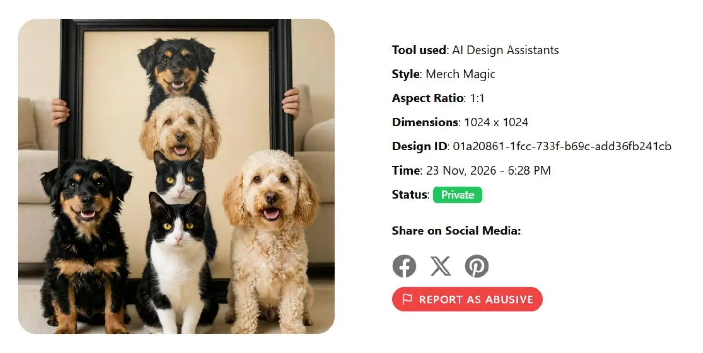

Three pets, one portrait, two reference images.
We generated separate dog and cat references with ERNIE, used their RenderPlatform URLs in Flux Klein, then entered the same references and composition prompt in Artistly’s Merch Magic web flow. The web result shown below is a separate generation from the API output.
Pipeline
Three generation steps, then a web test
- 01 / REFERENCE
Generate two dogs
prompt2image_ernie_turbo→ square JPEG on RenderPlatform CDN. - 02 / REFERENCE
Generate the cat
prompt2image_ernie_turbo→ second square JPEG on the same CDN. - 03 / COMPOSITION
Merge with Klein
image2image_flux2_klein9b_nvfp4with both image URLs and the portrait prompt.
Inputs and outputs
Click a caption to open the full image



01a20861-1fcc-733f-b69c-add36fb241cb. This image is distinct from the Klein API result above.Exact prompts
Expand to copy each prompt
01 · Two-dog reference · ERNIEView exact prompt
A photorealistic square studio pet portrait containing exactly two dogs, sitting side by side and facing camera. LEFT: a small shaggy black dog with soft tan muzzle, dark round eyes, floppy ears, and a happy open mouth. RIGHT: a fluffy cream-golden doodle dog with long wavy ears, brown eyes, and a happy open mouth. Their entire heads and upper bodies are visible, natural correct anatomy, distinct identities, fine realistic fur, warm ivory seamless background, soft diffused daylight, eye-level camera, clean composition. No cat, no person, no frame, no text, no logo.
02 · Tuxedo-cat reference · ERNIEView exact prompt
A photorealistic square studio portrait of exactly one black-and-white tuxedo cat sitting upright facing camera. Glossy black head and back, white muzzle, narrow white blaze down the nose, white chest, alert golden-yellow eyes, upright ears and long natural white whiskers. Full head and upper body clearly visible, accurate cat anatomy and markings, fine realistic fur, warm ivory seamless background, soft diffused daylight matching a companion dog portrait, eye-level framing. No dog, no person, no frame, no text, no logo.
03 · Final composition · Flux KleinView exact prompt
Create one photorealistic square pet-family photograph using BOTH reference images. Reference 1 supplies the exact two dogs: a small shaggy black dog with tan muzzle and a cream-golden fluffy doodle. Reference 2 supplies the exact black-and-white tuxedo cat with golden eyes. In a warm, elegant cream living room, a mostly hidden person holds a large upright black-framed painted portrait from behind, with only two hands at the frame edges visible. Inside the portrait, paint the same three pets stacked vertically on an ivory background: black dog at top, cream dog in the middle, tuxedo cat at bottom. In the real foreground, pose the same three animals together in front of the painting: black dog lower left, tuxedo cat lower center, cream dog lower right. Keep all three foreground pets separate, anatomically correct, and recognizable from their references. Make the painting visibly a painting and the foreground pets visibly real. Soft natural daylight, fine fur detail, centered balanced framing, no extra animals, no extra limbs, no text, no watermark.
API inputs and evidence
| Stage | API and key inputs | Observed result |
|---|---|---|
| Dogs | prompt2image_ernie_turboprompt; 1024 × 1024; JPEG URL | Output JPEG returned HTTP 200 |
| Cat | prompt2image_ernie_turboprompt; 1024 × 1024; JPEG URL | Output JPEG returned HTTP 200 |
| Composition | image2image_flux2_klein9b_nvfp4image1_path = dogs; image2_path = cat; lora_name = none; prompt; 1024 × 1024; JPEG URL | Output JPEG returned HTTP 200; UID c00c006313c34e4ca18fc32910504c9c |
| Web test | Artistly AI Design Assistants → Merch Magic Upload the two references in Image 1 and Image 2; paste the Klein prompt | User-provided screenshot shows a private 1024 × 1024 design |
Why the first API attempt failed
Input fetch failed at the GPU worker. The first Klein request used two Catbox URLs. The gateway accepted it, but the worker returned code 505: “Sorry! Input file is unavailable.” After we replaced those references with ERNIE outputs hosted on s3.renderplatform.com, a new Klein job produced a reachable JPEG. A URL opening on the caller’s computer does not prove that the GPU worker can fetch it.
Evidence: first worker log UID afe0772d0b3146a68cca21995f1de1da; reference UIDs e278be2a3fca467289e2d7376c81836b and 86bfe0d80e3d491c89ceabf33656e6be; final API UID c00c006313c34e4ca18fc32910504c9c. Gateway job lookup still returned 403, so completion was confirmed by the retrievable output artifact. The screenshot documents the separate web test.